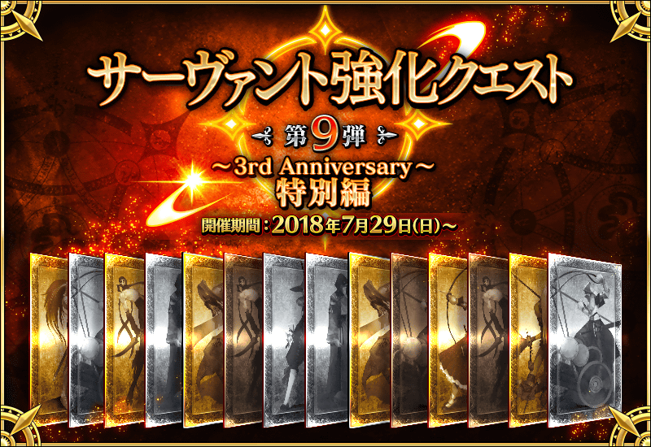
◆追加時間◆
2018年7月29日(日) 15:30～
◆概要◆
舉辦強化Servant能力的特別關卡「Servant強化關卡」的第9彈！本次為了記念～3rd Anniversary～，共14位的Servant成為對象！
1天各2位，連續7天合計14個關卡在迦勒底之門開放。
不僅進行對象Servant的強化，也可獲得聖晶石做為關卡通過報酬。
※請注意Servant強化關卡沒有冒險部份。
◆參加條件◆
所持有的強化對象Servant，必須使其最終再臨。
※未持有對象Servant的話，不會出現關卡。
※關卡並無舉辦期限。
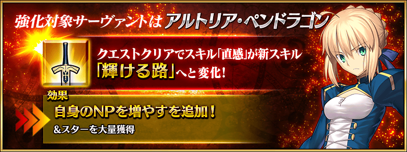
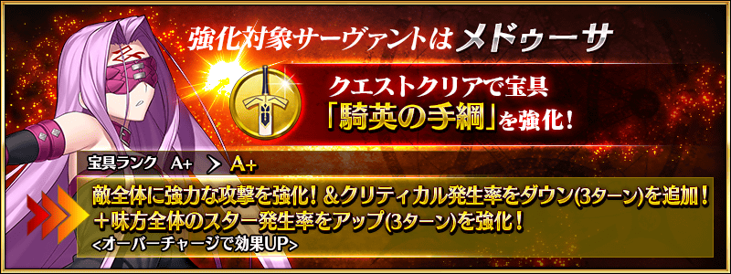

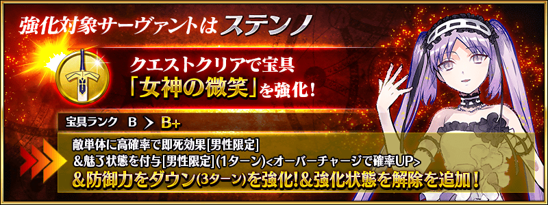
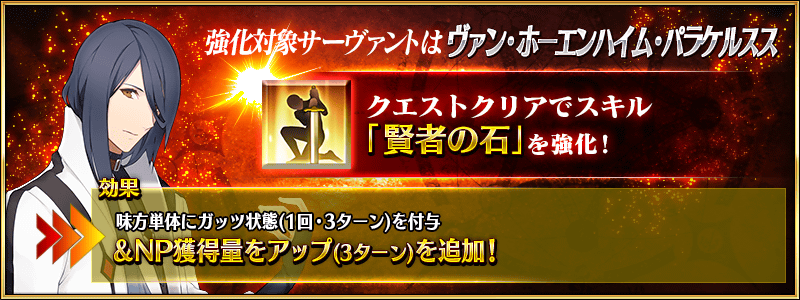

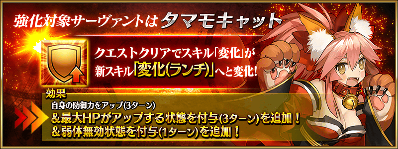
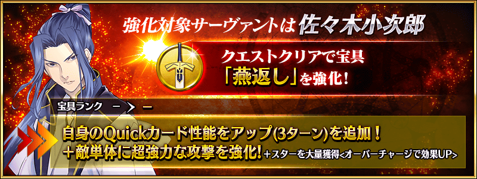

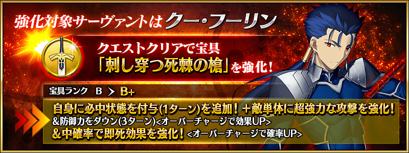

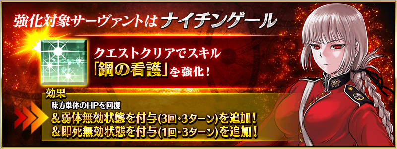
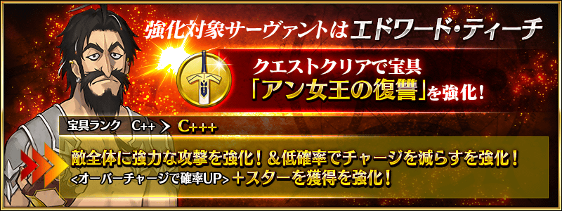
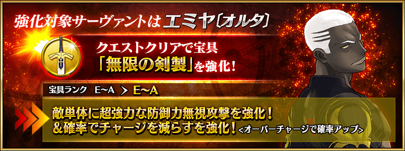
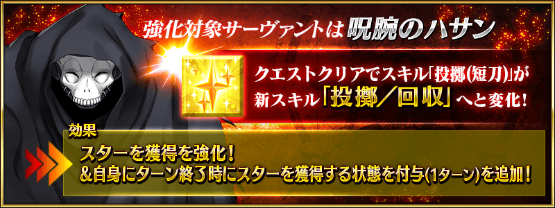
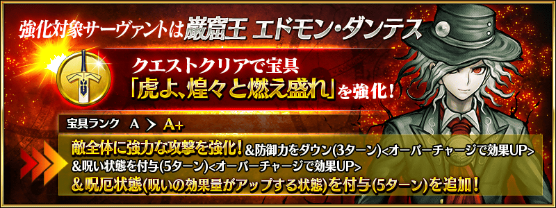
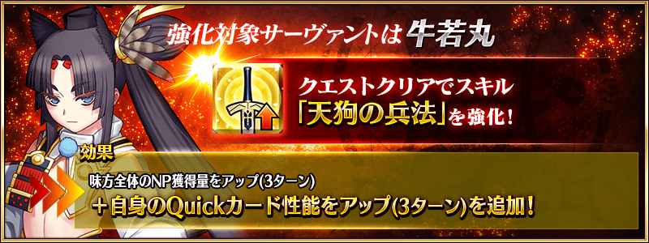